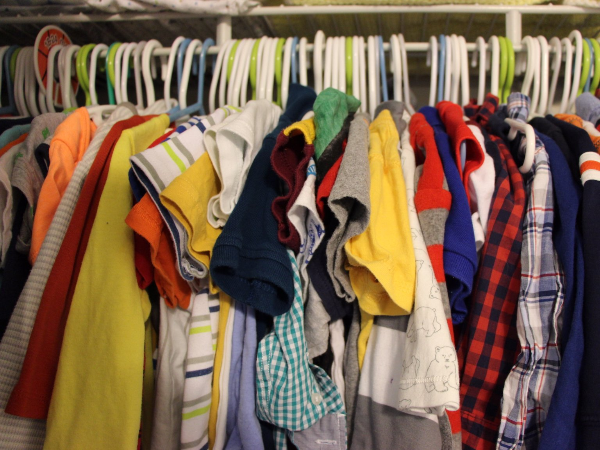
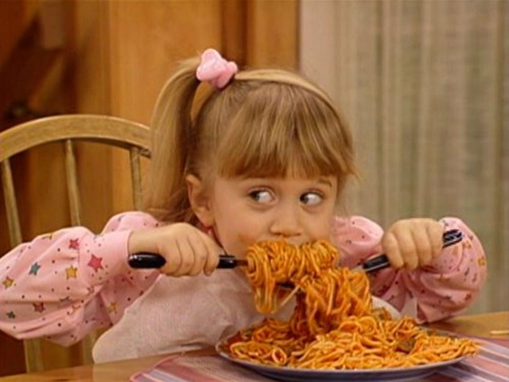
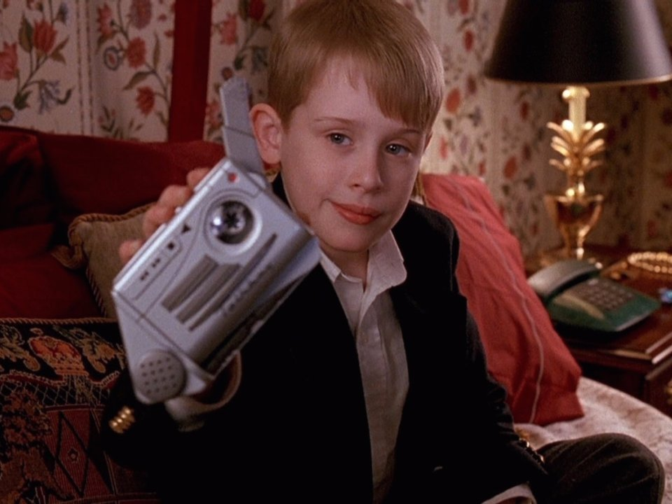
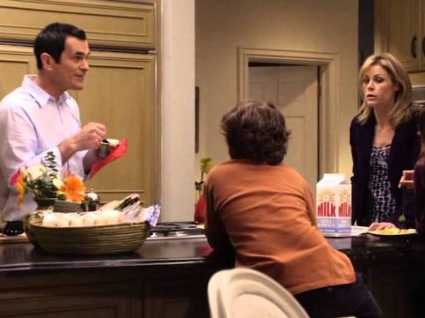
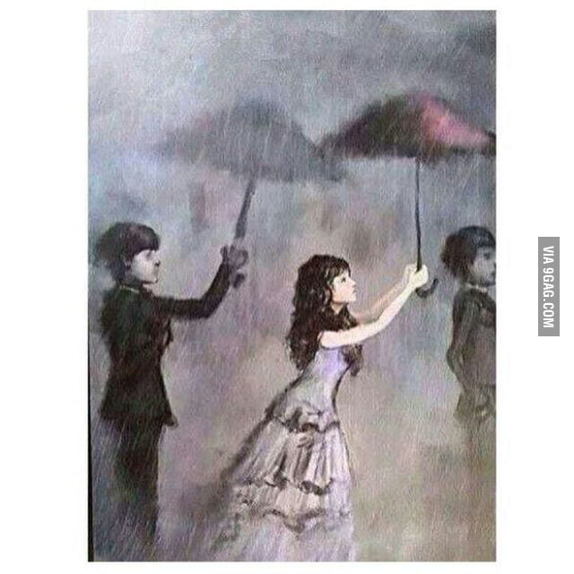

When you are the younger sibling in your family it can be good as bad, for example most of the time younger sibling have more freedom that the olders one when they were your age, but the is also some bad thing abour being the younger one is that your family for example your mom alway going to see you as a baby and never goig to admited that you grow up.

Unfortunately, a majority of our wardrobe is comprised of clothing pieces passed down from our older siblings.It's very unfortunate, but teaches you how to make the best with the least.

At the same time, we've learned how to play into the "baby" stereotype. When we mess up or do something wrong, we know to play the innocent, "baby" card and place the blame on the older siblings who are more likely to take the harsh punishment.

Let's make this clear: younger siblings know that they can get away with more, being able to push the limits on rules that older siblings were unable to. The reasoning for this is simple: by the time the youngest sibling comes along, parents are less worried about raising children and because of this, are more lenient when it comes to laying down the law.

Whether you're five, 10, 21, or 64, your mother will always introduce you to her friends as "the baby." And, unfortunately, this is usually accompanied by the infamous cheek pinching.

Despite the fact that you may argue often, you know that your older siblings are always there to offer assistance and guidance so that you don't end up making the same mistakes they did.